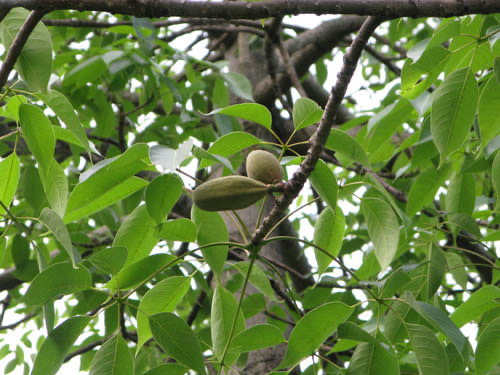

Basonym of Drug
Shalmali
Main Synonym
- Mocha
- Pichhila
- Purani
- Sthirayu
- Kantajadhya
- Tulini
Regional Name
- Bengali: Shimul Gach
- Gujarati: Shemalo
- Hindi: Semal, Semar
- Marathi: Kante Savar
- Tamil: Shalvadhu
- Telugu: Baruga Chettu
- English: Silk Cotton Tree
Botanical Name
Bombax malabaricum DC. / Salmalia malabarica
Family
External Morphology
A big tree with stem thorns
Useful Parts
- Stem Bark
- Tender Fruit
- Gum
- Spines
- Petioles
- Flowers
- Root
Important Phytoconstituent
- Tannic Acid
- Galic Acid
- D-galactopyranose
- Hentriacontane
- Gossypol
Rasa Panchak
- Rasa: Kashaya
- Guna: Laghu, Snigdha
- Virya: Shita
- Vipaka: Madhura
Action
Therapeutic Indication
- Grahi (Stops Oversecretions)
- Vrushya (Aphrodisiac)
- Balya (Strengthening)
- Rasayana (Rejuvenating)
- Atisarahara (Anti-diarrheal)
- Raktapittahara (Treat Bleeding Disorders)
Therapeutic Uses
- Atisara: Hima of Shalmali flowers is useful to treat diarrhea.
- Swetapradara: Flower prepared with ghee and saindhav is useful as a vegetable in diet for leucorrhea.
- Sotha: Leaves paste is applied in the inflammations.
Dose
- Root Powder - 3 to 6 gm
- Gum - 1-3 gm
- Flower Juice - 10-20 ml
Formulations
- Shalmali Ghrita
- Shalmalyadi Kwath
Adverse Effect
Not Known